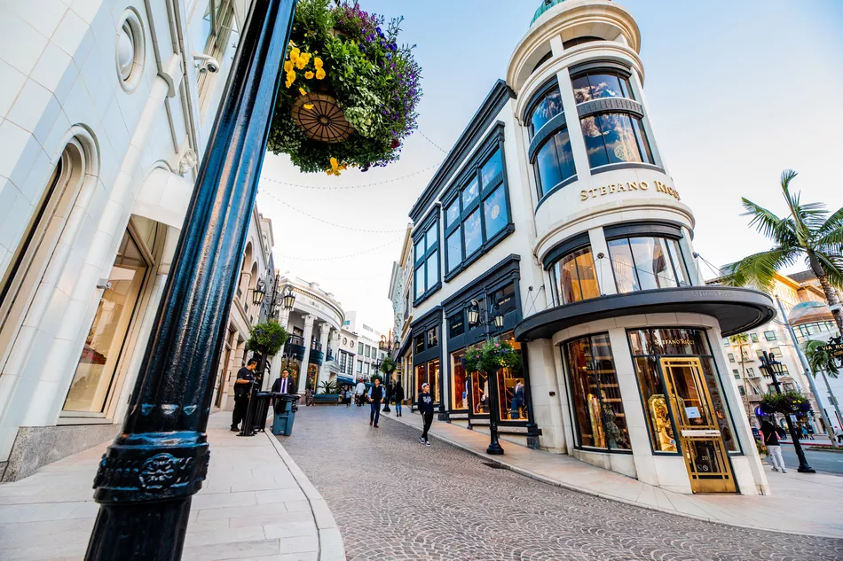
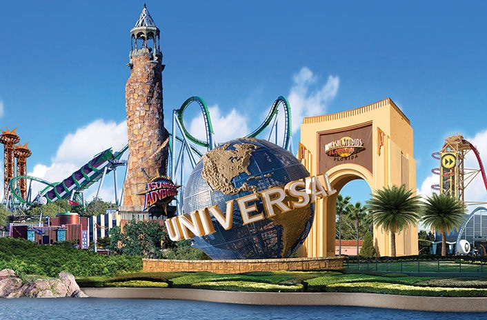
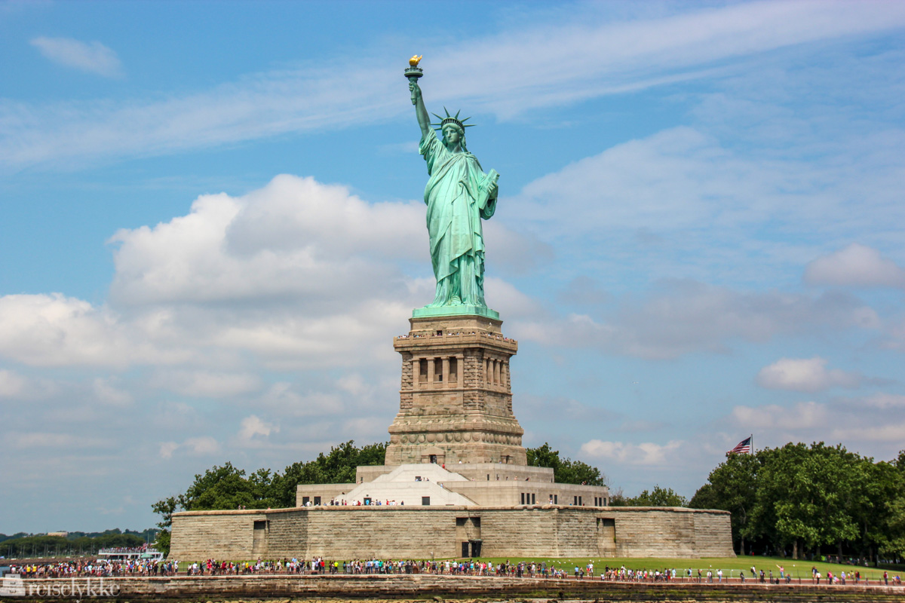

Activities in the USA
Rodeo Drive
Photograph : Christian Hundley / TripSavvy
Rodeo Drive is a shopping street in Beverly Hills i Los Angeles i California. The street is known for its exclusive shops, with many of the world's finest and most expensive brands of clothing and jewelery represented.
Underneath are of some of the stores you can find at Rodeo Drive:
Balenciaga, Chanel, Guess, Michael Kors, Prada, Rolex
Universal Studios Orlando
Photograph : unknown
Universal Studios Orlando is a theme park located at : 6000 Universal Blvd, Orlando, FL 32819, USA. This theme park was first opened June 7th, 1990.
Buy tickets to the park on the link underneat:
UniversalOrlando.com
Statue Of Liberty
Photograph : Reiselykke.no
24 January – 2 February
The Sundance Film Festival is the largest independent film festival in the United States. It is a program of the Sundance Institute and takes place in Park City, Utah, each year. The festival serves as a showcase for local and international indie filmmakers. It celebrates documentaries, feature films and shorts. Sundance is a great option for film lovers who enjoy innovative movies. There are also panel discussions to enjoy!